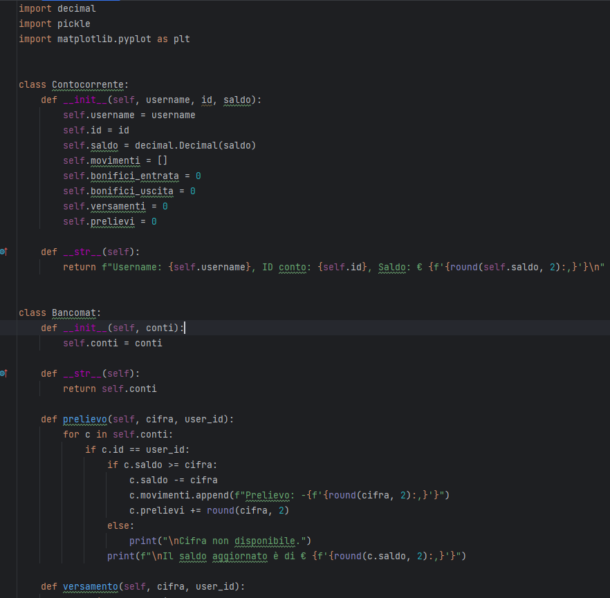
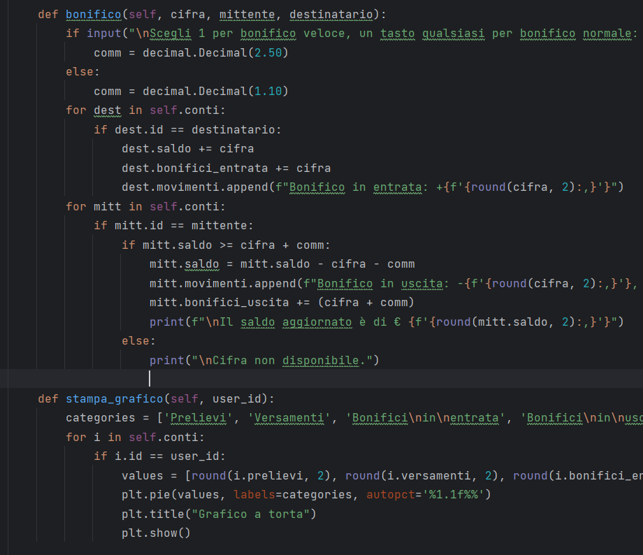
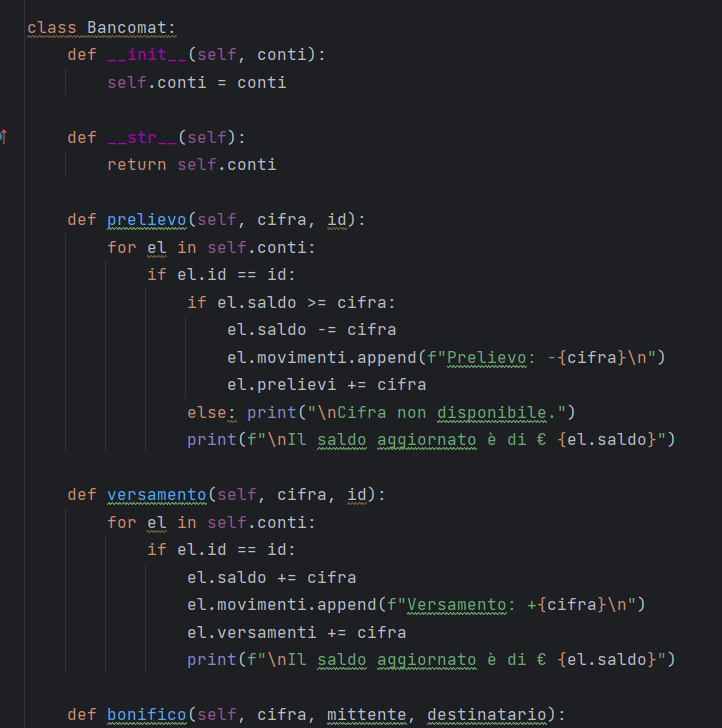
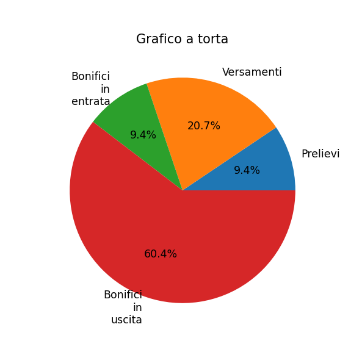
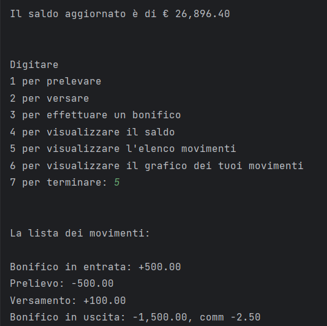

Il progetto gestisce un bancomat.
La struttura si basa su due classi, Bancomat e Contocorrente.
La classe Contocorrente contiene tutti i dati relativi ad un conto, quali credenziali, saldo e tutte le liste
raggruppanti i movimenti.
La classe Bancomat contiene una lista di tutti i conticorrenti ed all'interno di essa sono definiti
tutti i metodi utilizzati nel progetto.
I metodi Prelievo, Versamento e Bonifico registrano l'entrata/uscita di denaro in una lista complessiva che
verrà poi visualizzata con Stampa movimenti, ed in liste specifiche per tipo di movimento che verranno
utilizzate dal metodo Stampa grafico tramite la libreria Matplotlib.
Il metodo Bonifico, oltre a registrare l'uscita nel conto dell'utente attivo, registra anche l'entrata nel
conto del beneficiario (qualora sia un utente della stessa banca).
Il metodo Saldo, infine, visualizza su richiesta il saldo dell'utente attivo aggiornato in tempo reale ed in
più viene richiamato in automatico ad ogni entrata/uscita eseguita.


L'esecuzione si sviluppa su due cicli While.
Il primo ciclo chiede all'utente di loggarsi, verifica le credenziali e si ripete fino a quando le credenziali inserite non sono corrette.
Se le credenziali sono errate visualizza un messaggio di errore, se sono esatte salva l'ID dell'utente attivo in una variabile per poterlo
passare come parametro ai metodi che saranno chiamati successivamente.
Il secondo ciclo, ad accesso effettuato, visualizza l'elenco delle opzioni che l'utente può scegliere (Prelievo, Versamento, Bonifico,
Stampa saldo, Stampa movimenti, Stampa grafico, Termina) e si ripete fino a quando l'utente non sceglie di terminare.
Quando l'utente termina, a logout effettuato, il programma salva tutti i movimenti in un file Pickle, che riaprirà all'inizio della successiva esecuzione.


